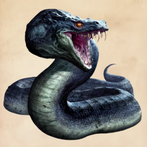
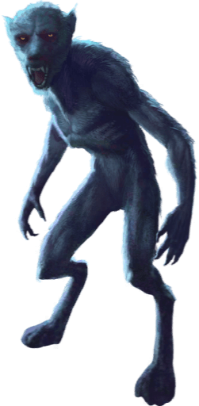
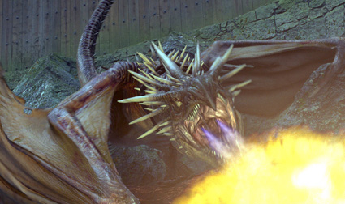

- Aspect humanoïde
- Vêtu d'une cape noie/grise
- Ministère de la magie jusqu'en 1996
- Voldemort (deuxième guerre des sorciers)
- Ministère de la magie jusqu'à nos jours
| Le Basilic | |
|---|---|
|  | |
| Statut | Animal |
| Apparence | Serpent géant |
| Caractère | Dangereux |
| Yeux | Jaune |
| Peau |
|
| Plumes/Poils | Plume écarlate sur la tête (pour les mâles) |
| Longueur | Jusqu'à 15 mètres |
| Alimentation |
|
Le Basilic est un reptile gigantesque, que les sorciers surnomment le Roi des Serpents. Généralement élevée par des mages noirs, cette créature rarissime est l'une des plus dangereuses du monde. Grâce aux découvertes du mage noir Herpo l'Infâme, on sait que le Basilic est issu d'un oeuf de poule couvé par un crapaud.
Cette créature à la forme d'un serpent de grande taille, certains spécimens mesurent facilement près de quinze mètres possédant un corps allongé et cylindrique, aux écailles de couleur vert brillant ainsi que deux grands yeux jaunes luisants.
On distingue la femelle du mâle car ce dernier arbore des plumes de couleur rouge vif au sommet de la tête. Le Basilic est également réputé pour son extrême dangerosité.
Un Basilic ne peut être réellement domestiqué et reste donc dangereux pour son créateur tout comme pour les autres sorciers.
Seuls les sorciers capables de parler Fourchelang, la langue des serpents, ont la possibilité de se faire obéir d'un Basilic.
Ses mâchoires sont dotées de longs crochets qui injectent un venin mortel dans le corps de ses proies et dont le seul remède connu sont les larmes d'un phénix, élément extrêmement rare.
Le venin de Basilic est également une des rares substances qui peut détruire un Horcruxe, ce qui montre encore sa puissance.
Ses yeux sont tout aussi redoutables car ils ont la faculté de tuer instantanément quiconque croise leur regard.
Il existe toutefois une exception.
En effet, si la victime croise sont regard par la médiation d'un objet (ex: un reflet), elle ne meurt pas mais est pétrifiée.
Créer un Basilic reste une activité prohibée et cela depuis le Moyen Âge.
Cependant, un sorcier mal intentionné et un tant soit peu malin sait parfaitement qu'il est très simple de contourner les dispositifs de contrôle du ministère de la
Magie.
| Loup Garou | |
|---|---|
|  | |
| Statut | |
| Apparence | Loup |
| Pays d'origine | Europe du Nord |
| Localisation | Monde entier |
| Alimentation | Omnivore |
Un loup garou est un humain atteint de lycanthropie, qui se transforme en loup-garou chaque pleine lune.
Un loup-garou a une apparence très fortement similaire à celle d'un loup normal. Les différences entre eux sont subtiles et rendent difficile le fait de les distinguer physiquement l'un de l'autre.
Les seuls signes qui permettent de remarquer l'humanité d'un loup-garou sont la petitesse de son museau et de ses pupilles ainsi que sa queue moins fournie. Bien qu'un loup-garou soit physiquement très semblable à un loup commun, son comportement est en revanche très différent
Un loup n'est pas naturellement agressif et ne s'attaque à un humain que lors de circonstances exceptionnelles, tandis qu'un loup-garou se montrera extrêmement agressif et sanguinaire envers les êtres humains, mais ne s'intéressera pratiquement jamais aux autres créatures.
Il est extrêmement rare qu'un loup-garou mâle et un loup-garou femelle se croise au cours d'une nuit de pleine lune et décident de se reproduire. Dans ce cas, ils donnent naissance à des louveteaux parfaitement semblables à de véritables bébés loups (autant dans leur physique que dans leur comportement), mais dotés d'une intelligence exceptionnelle. Ce fait exceptionnel ne se serait produit que deux fois jusqu'à présent et l'une de ces portées a un jour été relâchée dans la forêt de Poudlard.
| Détraqueur | |
|---|---|
|
|
|
| Apparence |
|
| Localisation | Azkaban |
| Utilité | Gardien d'Azkaban |
| Affiliation |
|
Un Détraqueur est une créature des ténèbres considérée comme la plus abjecte qui soit au monde. Selon le classement du Ministère c'est un non-être, celà veut dire qu'il n'a pas été vivant auparavant au contraire des esprits.
Les Détraqueurs se nourrissent de la joie humaine, et provoquent par la même occasion du désespoir et de la tristesse sur quiconque se trouve à proximité. Ils sont aussi capables d'aspirer l'âme d'une personne, laissant leur victime dans un état végétatif irréversible.
Il n'existe qu'un seul moyen de les repousser, le sortilège du Patronus. Quand une personne s'approche d'un Détraqueur, toute sensation de plaisir, tout souvenir heureux disparait.
Si on lui donne le temps, le Détraqueur se nourrit des autres
jusqu'à les réduire à quelque chose qui lui ressemble - des êtres maléfiques, dépourvus d'âme.
Une personne qui subit son pouvoir ne garde plus en mémoire que les pires moments de sa vie.
Il prend une longue et lente inspiration qui produit une sorte de râle lorsqu'il se nourrit. Le Baiser du Détraqueur est la pire arme qu'il ait. Il retire sa cagoule, referme sa mâchoire sur la bouche de sa victime et aspire son âme.
| Magyar à pointes | |
|---|---|
|  | |
| Apparence |
|
| Caractère | Le plus dangereux de tout les dragons |
| Yeux | Yeux jaune, pupilles verticales comme ceux d'un chat |
| Peau |
|
| Pays d'origine | Hongrie |
| Alimentation |
|
Le dragon est un reptile ailé géant qui crache du feu. extrêmement dangereux, il est répandu dans le monde entier et comprends de nombreuses espèces.
Ici je vais vous présenter dans un premier temps le Magyar à pointes considéré comme le plus
dangereux des dragons.
Les femelles dragons Magyar tout comme les autres femmelles dragons sont plus dangereuses que les mâles. Ce qui fait de la femelle Magyar une créature extrêmement dangereuse et probablement core plus quand elle sent ses oeufs en danger.
Le
Magyar à pointes ne peux pas être dressé ou domestiqué, c'est une créature mortelle et agressive. Le Magyar à pointes possède une force brute commun à tout les dragons, ainsi qu'une capacité de cracher du feu avec 2 jets sur une longueur de
15 mètres.